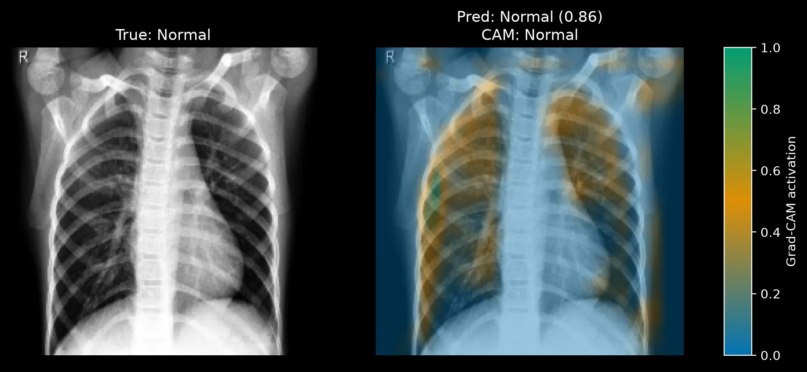
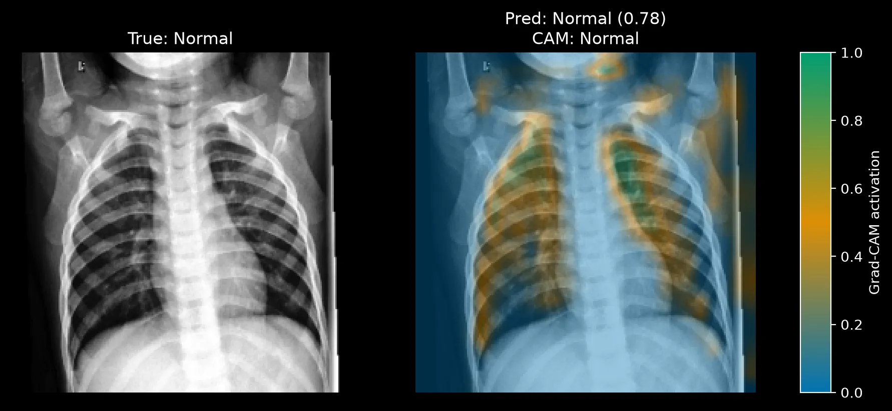
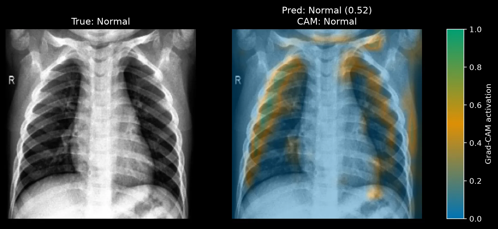
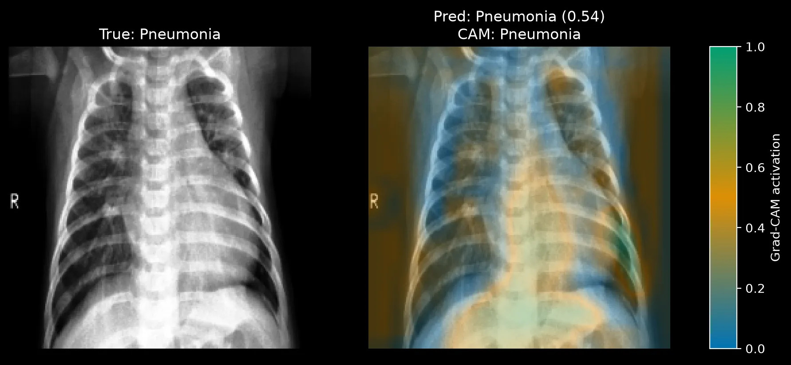
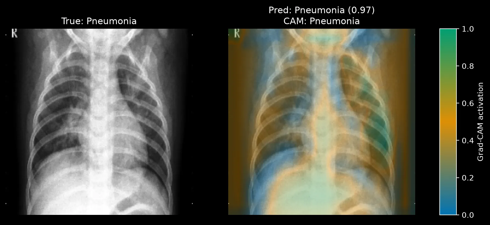
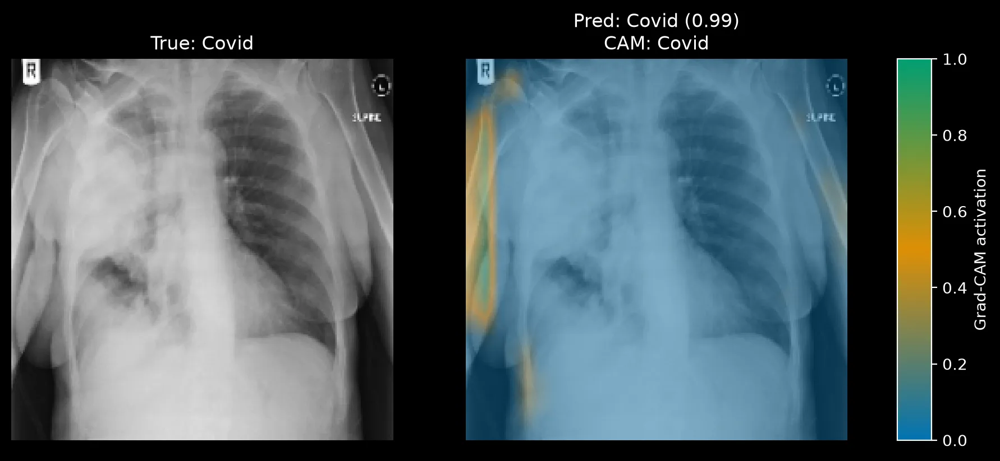
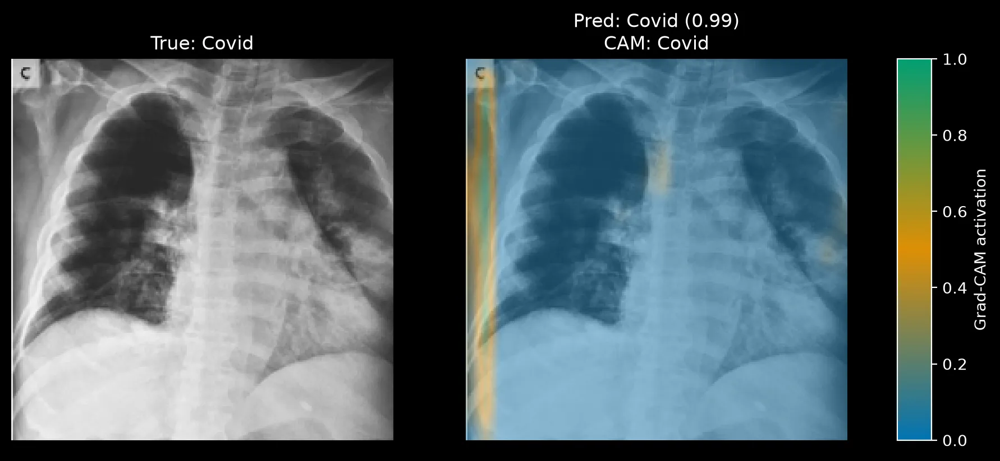
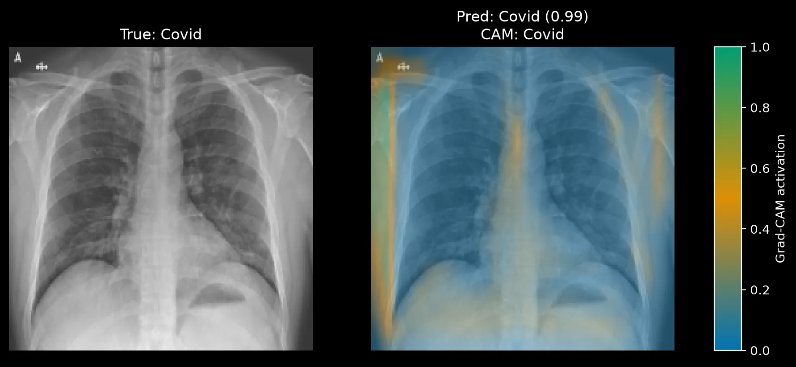
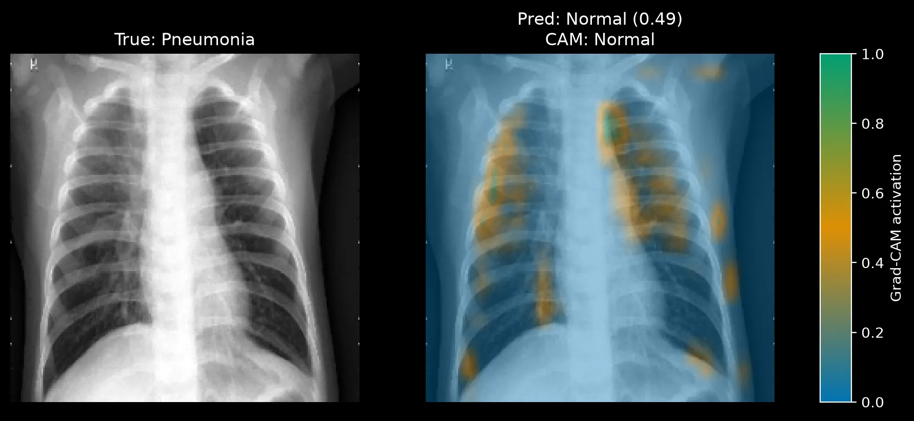

Where Part 1 left off
In Part 1 I trained a small custom CNN from scratch to classify chest X-rays as Covid, Normal, or Pneumonia. It reached 92.0% validation accuracy and 84.8% test accuracy (0.975 AUC) on a 66-image test set. Most errors fell on the Normal vs. Pneumonia boundary: 4 of 20 Normal images were labelled Pneumonia, and 3 of 20 Pneumonia images were labelled Normal. Covid looked well separated, with 24 of 26 images correct.
However, this last result looks a bit suspicious. My assumption is that Covid and viral Pneumonia can look alike on a plain X-ray, so a model that separates Covid this well on 26 test images might be using something other than the lungs. This is the hypothesis with which I am going to continue. In other words, what if the model does not look at the patterns the lung tissues have but at something else. It might be that the model is not looking at all at the lungs themselves.
How Grad-CAM works
Grad-CAM (Gradient-weighted Class Activation Mapping) can help me addressing my hypothesis. The answer that it can answer is the following: for a given prediction, which regions of the image pushed the model toward that class? It works in three steps:
- Run the image through the network and record the feature maps at a chosen convolutional layer. Essentially, each feature map is a small grid that shows where one learned filter fired.
- Compute the gradient of the target class score with respect to those feature maps, then average each gradient over its grid. The result is one weight per feature map. A large positive weight means that filter's activity raised the class score.
- Multiply each feature map by its weight, sum them, and keep only the positive values. Scale the result to the range 0 to 1 and stretch it to the size of the input image.
The interactive visualisation below might help to understand the basic intuition behind Grad-CAM:
Heatmap, 4 by 4
Scaled so the maximum is 1
Stretched over the image
Smoothed, as in the real figures
The output is a heatmap. High values mark regions that "fired up" which means thaht they supported the prediction. It should be clarified, though, that Grad-CAM shows where the evidence came from, not why that evidence indicates disease.
Setup
I used block4_relu, the last convolutional block from Part 1,
as the target layer. That layer's output is a 14×14 grid.
Even though, earlier layers have finer grids, they carry less class-specific signal.
The global average pooling layer that follows keeps a direct link
between each spatial position and the class score,
which is why I chose this architecture in Part 1.
Grad-CAM is used to evaluate a specific trained model's performance, thus any re-training, re-evaluation, or re-testing
would re-initialise the weights but more importantly the activation maps will belong to a different model than the one we are studying
which will break the reproducibility of the results.
For these reasons, I just loaded the saved best.keras checkpoint from epoch 50,
passes raw [0, 255] grayscale pixels to the model (the Rescaling layer handles normalisation),
and does not retrain or re-evaluate anything. The core computation is short.
Grad-CAM computation
def compute_gradcam(grad_model, image_batch, class_index, input_name):
with tf.GradientTape() as tape:
activations, predictions = grad_model({input_name: image_batch}, training=False)
class_score = predictions[:, class_index]
gradients = tape.gradient(class_score, activations)
channel_weights = tf.reduce_mean(gradients, axis=(1, 2), keepdims=True)
heatmap = tf.reduce_sum(activations * channel_weights, axis=-1)
heatmap = tf.maximum(heatmap, 0.0)[0] # keep positive evidence only
maximum = tf.reduce_max(heatmap)
return (heatmap / maximum).numpy() if maximum > 0 else heatmap.numpy()By default the script explains the class the model predicted. This matters for how you read the figures: each heatmap shows what supported the model's own answer, right or wrong. Each figure has the original image on the left and the overlay on the right, with the true label, predicted label, and confidence in the titles.
One caution on the colormap. I chose a colorblind-safe palette, but it does not follow the usual blue-to-red convention. Activation runs from blue (0) through orange (about 0.5) to green (1.0). Green is the strongest signal.
What the model looks at
I ran Grad-CAM on nine test images, selected by index: three Covid, three Normal, and three Pneumonia. Nine images is a small sample, therefore the patterns presented below are only worth investigating and not a measured rate of the performance.
Normal: plausible focus on the lungs
The Normal predictions look the way I hoped. Activation concentrates inside the two lung fields and along the rib and clavicle edges (Figures 1 and 2), which is the region a radiologist would examine.


There are a few things that I would like to note here. First of all, the confidence values are moderate to strong (0.86 and 0.78), and a third Normal image (Figure 3) was predicted at only 0.52. By closely looking at the plot we can observe that its activation mostly stays in the lungs but it is also spread a bit across the rib edges, which fits a model that is unsure. Small patches also appear near the shoulders and the frame edge in image 10 and image 11. They are minor here, but they will matter in the Covid results below.

Pneumonia: broad and diffuse
In the Pneumonia cases we see that instead of a compact region, activation spreads almost across the the entire X-ray (Figures 4 and 5). Both images were classified right, with very different confidence: 0.54 for image 0 and 0.97 for image 12.


Image 12 we see that the model is 97% confident, yet a large share of the activation sits below the lungs and on the side margins of the frame close to the ribs. Consolidation near the lung bases is a real pneumonia finding. But the activation over the abdomen and the left and right frame edges is not lung tissue, so I cannot call this focus grounded in the lungs. It might be that the diffuse pattern reflects a widespread disease but also it can point to a weak and unfocused decision of the model itself. It is quite precarious to clearly say so based on only two images.
Covid: the model looks at the edge of the frame
Regarding the Covid X-rays, all three were predicted Covid at 0.99 confidence, and in all three the strongest activation is a narrow vertical strip along the left edge of the image, outside the chest (Figures 6, 7 and 8).



The lung fields in these images carry little activation. For instance, the left side of Figure 6 (the patient's right lung) has a large opaque region, and the heatmap places almost no activation on it. On the other hand, Figure 8 looks a bit different, with lung fields that appear clearer, so a low lung signal there is less surprising. Even so, the top-left patch in Figure 8 sits on the annotation markers, not on the anatomy. In all three cases the model reaches 99% confidence with little attention on lung tissue.
Regarding the Covid cases, there are a few recurring patterns worth noting. First of all, the X-rays show that the highly activated areas are not lung tissues; they are areas outside of the lungs very close to the margins of the X-ray. Just by looking at the activation areas I cannot say what the model detects on these X-rays and it is able to correctly classify these images. It might be a shortcut such as a dataset specific border, a scanner or cropping difference, or an annotation mark that co-occurs with Covid images. After all neural networks are famous for learning through shortcuts sometimes.1, 2, 3, 4
The misclassified case
Figure 9 is a true Pneumonia case that the model labelled Normal at 0.49 confidence. It is one of the 3 Pneumonia-to-Normal errors from Part 1.

Activation is scattered across both lungs in small patches, with no dominant region. The image itself shows no obvious opacity to my untrained eye, and I am far from qualified to read chest X-rays. However, there are two assumptions I can make that follow the evidence I have. The pneumonia may be subtle enough that the model found nothing to hold onto. Or the model has learned Normal as a default when no strong signal appears. Confidence just under 0.5 supports the second reading, but one image is not enough to separate them.
This connects to Part 1. The Normal vs. Pneumonia boundary was where the model made most of its errors, and the Grad-CAM maps for both classes are diffuse. A model with no sharp evidence for either class will guess near the boundary, which is what the confusion matrix showed.
What I take from this
Part 1 showed a baseline with solid aggregate numbers and a clean Covid result. Grad-CAM shows that the clean result is the least trustworthy one. The class with the highest recall and the highest confidence is the class where the model looks at the wrong place. The accuracy table from Part 1 could not have shown that.
The Normal maps show that the model can attend to lung tissue, so the architecture is not the obstacle. The Pneumonia maps show weak, unfocused evidence. The Covid maps show a probable shortcut. For now the model is far from being deployable. First and foremost, I want to understand the shortcut —if any— and see how I work around that to improve the performance.
Comments
Have a question, disagree with an assumption, or want to suggest an improvement? Leave a comment below and I will reply.